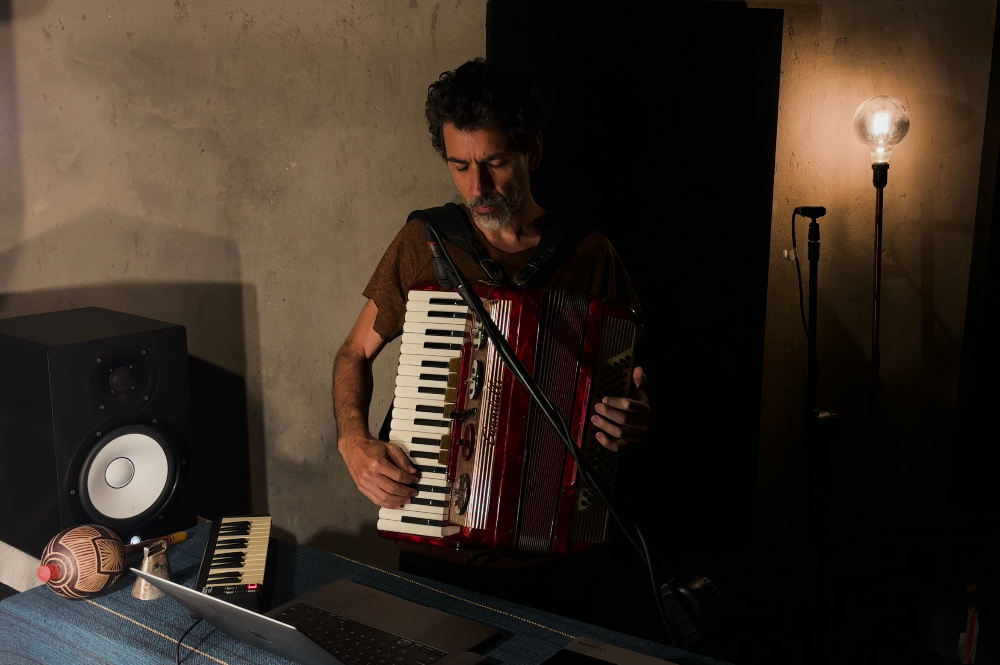
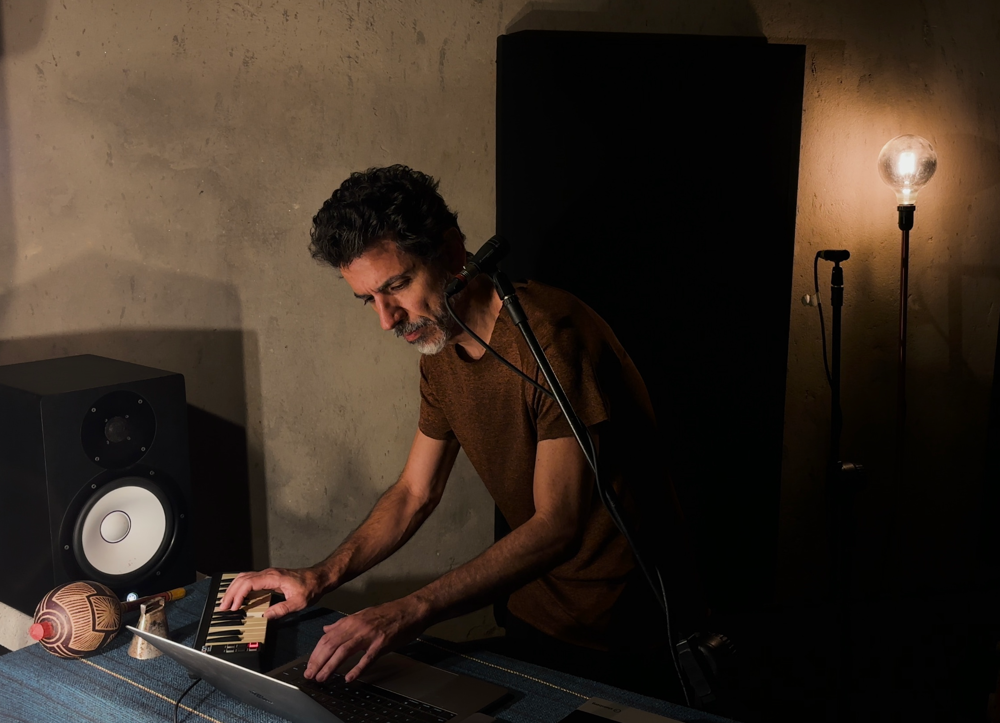

SONA presents A PESSOA BOB

ATTENTION AND WHAT DOESN'T DEMAND A REACTION

A multi-instrumentalist, composer, and sound artist, Ayrton Pessoa Bob moves between piano, accordion, synthesizers, and electronic controllers with the same ease he brings to shifting between songwriting, film scoring, performance, and installation work. Over more than a decade of solo production, alongside his role as a member of the well-known Brazilian and Ceará-based group Argonautas, Bob has steadily built a language defined by its interest in edges, dwelling in the space between sound and silence, between the electronic and the acoustic, between rigorous composition and improvised gesture.
"I usually say I started playing by stealing a keyboard from my sister," he says, "a tiny little Casiotone". That keyboard was how he first discovered music as play, and it set the course for his preference for teaching himself. The pleasure of figuring things out on his own would go on to shape his entire relationship with music, creating a productive tension with another dimension just as central to his path: collaborative work.
In school, now with a bigger keyboard, Bob put together a few groups. One of them was Argonautas, which got its start back in his school days and, decades later, still stands as one of the touchstones of Ceará's homegrown music scene. The group worked as a space for exchange that, while it didn't have the rigidity of a formal study group, carried just as much intensity. One of his bandmates in Argonautas opened the doors of his home, and of music itself, quite literally. "His mom was a music teacher. The moment you walked into their house you could feel it... there were music books scattered everywhere". Later on, Bob would go on to study composition with Liduíno Pitombeira, the renowned Brazilian composer, years after his first piano lessons.
The most decisive turning point in Bob's path didn't come directly from music. While still young, he found his way into other artistic fields and sensed that something was missing, something music alone wasn't giving him. Theater filled that gap. It offered him a different way of listening, something he says he "didn't yet know how to listen for".

One of the groups he names as pivotal in that process was Bagaceira, a landmark theater company in Fortaleza, in Ceará, and across Brazil. There, he discovered he could take sonic risks that bands didn't allow for, especially through dialogue with staging, and he found himself a participant in a "conversation" unlike anything he'd experienced before that encounter. To this day, whenever he composes or creates any piece, Bob says he starts by visualizing a scene, imagining images and movements even when those elements never make it into the final work. That practice has become a deeply internalized habit, almost automatic at this point.
He has more than thirty stage productions to his name over the years, composing for groups and artists across Ceará's contemporary scene, from Ivanov (Teatro Máquina, 2011) to Maçã Mordida (Teatro Espiral, 2022), along with names like Pavilhão da Magnólia, Coletivo Soul, and No Barraco da Constância Tem. For Bob, scoring for theater is a radically different experience from scoring for film, where sound arrives in post-production, layered onto images already locked in place. He explains that in live theater, "the performer affects the sound, and the sound affects the performer, it's kind of a mind-bending thing", a transistor-like transformation that both emits and collects. That idea of a circuit, where sound isn't one-way transmission but exchange, contagion, feedback, runs through his entire poetics.
The distinction Bob draws between sound and music is central to understanding his work, not as a hierarchy, but as a matter of scope. Music, as it's typically practiced in popular song, works from conventions that define what counts and what gets left out. Sound, in a broader sense, as matter, as phenomenon, as event, escapes those boundaries. It's in that wider territory that Bob feels most at home creating.
Bob recounts an episode with the precision of someone who recognizes it as a founding moment. He once set out to record the sound of a sawmill. "The guy loved that I'd come all the way out just to record. He turned on every machine, started cutting wood. And I just kept recording, recording... I was captivated by that sound". What might look like an eccentric gesture, a musician heading out to capture industrial noise was, for Bob, the logical outcome of an intuition that had been taking shape for a while. The sound of everyday life, the kind usually pushed to the background, that neither threatens nor demands attention, holds a richness that conventional music tends to waste.

This attentiveness to "what doesn't demand an immediate reaction" is, perhaps, the most precise definition of what Bob does, and of how he listens. His background in philosophy isn't a biographical footnote without consequence; it runs through how he thinks about the creative process, how he names projects, how he builds narratives around his own work. His album Horizonte Aparente (2019, "Apparent Horizon"), for instance, seems to evoke a concept from astrophysics: the event horizon, the boundary beyond which no information can escape a black hole. Bob turns the concept into a metaphor for a practice drawn to the thresholds of the perceptible. The title says a lot about the artist, someone less interested in the destination than in the traffic at the borders.
Horizonte Aparente is Bob's second solo album. Developed at the Music Lab of Porto Iracema das Artes school, under the guidance of São Paulo-based pianist and producer Benjamin Taubkin, the project took shape through a back-and-forth between experimentation and live performance. The result is an eleven-track record that brings together minimalist sonorities, experimental electronics, and glitch, with a Brazilian undercurrent that Bob himself describes as "camouflaged in the middle of it all".
The project is structured as a meeting of three artists: Bob on electronic programming, accordion, and composition, Jônatas Gaudêncio on clarinet, and Raí Santorini on lighting design. The dialogue between sound and light operates literally here, creating a circuit where visual and sonic transformations feed off each other, music as something inseparable from the space it occupies.
On the accordion, an instrument with deep roots in Northeastern Brazilian music, Bob finds sonic material he reshapes by setting it in friction with electronic frequencies and the wandering breath of Jônatas's clarinet. Here, the accordion escapes the role of folklore or mere regional reference, establishing itself instead as a sonic body, with its own roughness and low end, placed in dialogue with soundscapes that evoke science fiction.
In recent years, Bob has been going through what he describes as rediscovering something he'd once underestimated. "I underestimated the song for a while. Now I'm back on that wave: picking up the acoustic guitar, like a bard, and just singing something direct. Words carry a hell of a lot of force, giving that up isn't very smart". That return to the song form hasn't come without tension.
Bob describes himself as a "naturally shy" person, and singing in public with his own voice, on a solo work, turned out to be exposure on a whole different level. "The first time I went to sing something of my own, solo, my nerves were completely raw. It felt like I'd never sung in public before. It was simply because the other voices were missing". The absence of that sonic support, the other voices, the volume, the collective sound that spreads out the exposure, is felt physically. It's strange that someone who has spent so many years working with sound as sensitive matter would need to renegotiate his relationship with his own voice. But maybe that's exactly because he knows all too well what's at stake.

In studio with SONA, Bob recorded two tracks. On "Cardume" ("School of Fish"), he works almost like an architect of repetition, using synthesizer and keyboard loops that unfold in minimalist fashion. The track leans on precise arpeggios and a progressive layering of textures that carry the listener along a continuous upward line. It's an exercise in patience and immersion, where the sound takes on an expansive character, mirroring the logic of the event horizon the artist is so drawn to: an atmosphere that grows steadily denser and more magnetic as it advances, with no rush to arrive, focused purely on the traffic of its own progression.
"Respiro" ("Breath"), meanwhile, deepens Bob's hybrid signature by putting the acoustic warmth of the accordion in friction with the rawness of electronic synths and keyboards. The track's great strength lies in its use of voice, which appears here stripped of any semantic or literary function, operating strictly as another textural, organic layer in the arrangement. As the rising rhythm expands, accordion and voice merge with the synthetic frequencies, creating a contagious, feedback-driven mass of sound. It's a piece that perfectly captures the artist's poetics, building a sound that doesn't ask for a reaction but instead swallows the space whole and turns listening into a living atmosphere.
Faced with these compositions, it becomes clear that Ayrton Pessoa Bob's path keeps renewing itself without abandoning its core obsessions. Whether stitching together millimeter-precise synthesizer loops or dissolving voice and accordion into continuous textures, his current work stands as a living synthesis of his trajectory, proposing a music born from the imagination of invisible scenes, one that invites an immersive kind of listening. Operating at the threshold between technical rigor and sensory surrender, Bob reminds us that sound, even when made for small audiences, carries a monumental expansive force. In the end, his art, too, asks nothing of us in the way of an immediate reaction. It asks only for the disarmament needed to inhabit, alongside him, the rich and mysterious edges of silence.